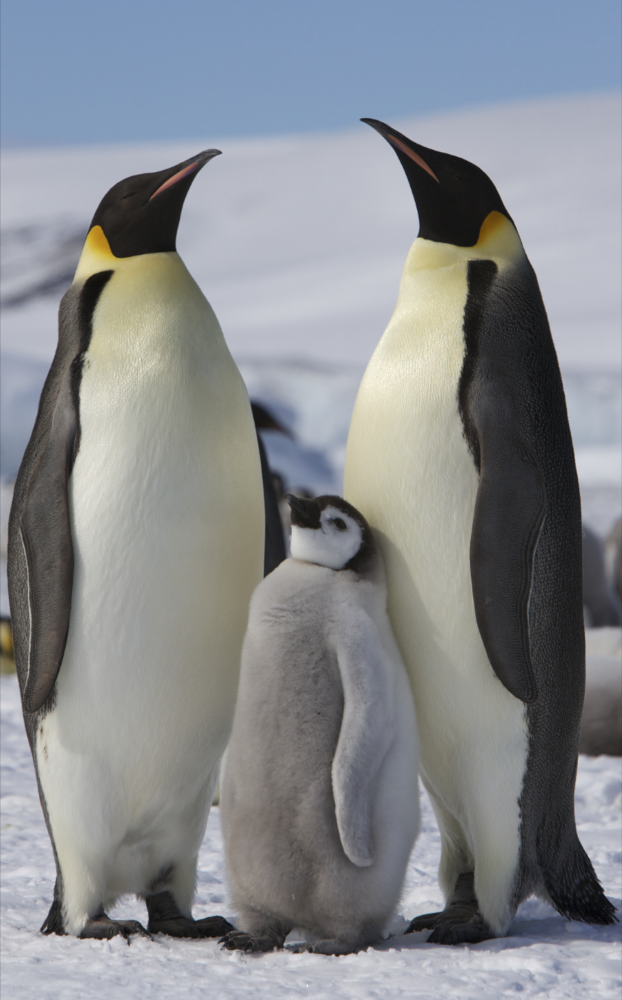

Pinguim-imperador
Aptenodytes forsteri
Habitat
Vive exclusivamente na Antártida, principalmente em regiões próximas ao gelo marinho. Reproduz-se durante o inverno antártico, enfrentando temperaturas extremamente baixas e ventos intensos. Passa boa parte da vida no oceano, onde procura alimento.
Alimentação
É carnívoro e alimenta-se principalmente de peixes, lulas e krill, pequenos crustáceos semelhantes a camarões. Mergulha em grandes profundidades para capturar suas presas e pode permanecer submerso por vários minutos.
Características
É a maior espécie de pinguim existente, podendo atingir aproximadamente 1,2 metro de altura. Possui dorso preto, ventre branco e manchas amarelo-alaranjadas na região do pescoço e das laterais da cabeça. Suas asas são adaptadas para funcionar como nadadeiras, permitindo movimentos eficientes debaixo d'água.
Curiosidades
- O macho é responsável por incubar o ovo durante uma parte importante do período reprodutivo, mantendo-o sobre os pés e protegido por uma dobra de pele.
- Durante o inverno, os indivíduos se agrupam para conservar o calor corporal.
- É capaz de realizar mergulhos muito profundos, chegando a centenas de metros abaixo da superfície.